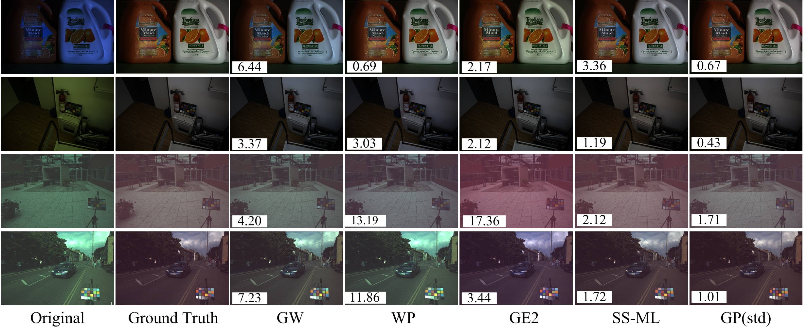
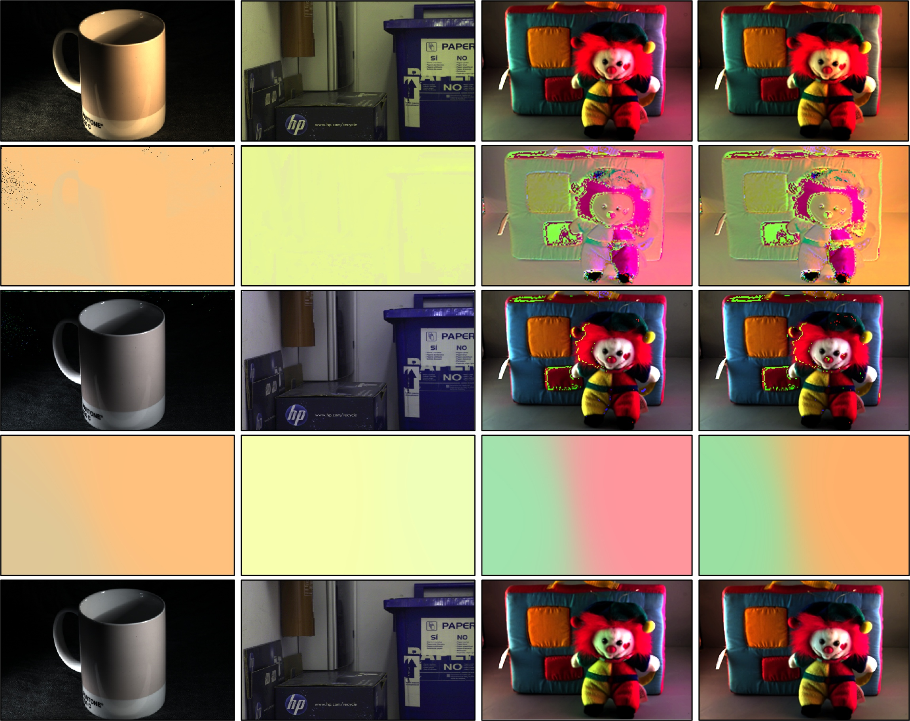
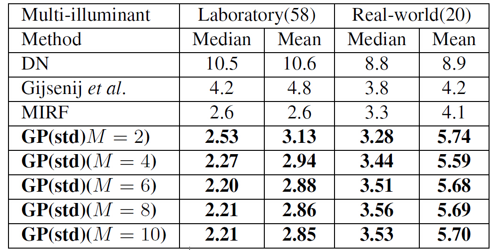
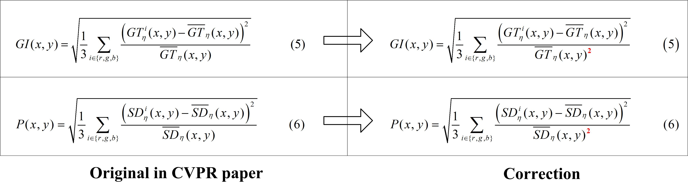

Efficient Illuminant Estimation for Color Constancy Using Grey PixelsKai-Fu Yang, Shao-Bing Gao, Yong-Jie Li *
|
|
||
AbstractIlluminant estimation is a key step for computational color constancy. Instead of using the grey world or grey edge assumptions, we propose in this paper a novel method for illuminant estimation by using the information of grey pixels detected in a given color-biased image. The underlying hypothesis is that most of the natural images include some detectable pixels that are at least approximately grey, which can be reliably utilized for illuminant estimation. We first validate our assumption through comprehensive statistical evaluation on diverse collection of datasets and then put forward a novel grey pixel detection method based on the illuminant-invariant measure (IIM) in three logarithmic color channels. Then the light source color of a scene can be easily estimated from the detected grey pixels. Experimental results on four benchmark datasets (three recorded under single illuminant and one under multiple illuminants) show that the proposed method outperforms most of the state-of-the-art color constancy approaches with the inherent merit of low computational cost. |
|||
ResultsFigure: Results of several algorithms on the selected images of the SFU indoor dataset (the first row) and the color-checker dataset (the second to fourth rows). The angular error is indicated on the lower left corner of each image. |
|||
 Figure : Results of on the sevaral images with multiple illuminants. |
 Table: Performance of various methods on multi-illuminant dataset. |
||
Citation & Download
* Correction * : There are some errors in Equation (5) and (6).
Reference:
|
|||
|
Back to ViCBiC Projects Page |
||
latest update： 02-Jun-2015 |
|||